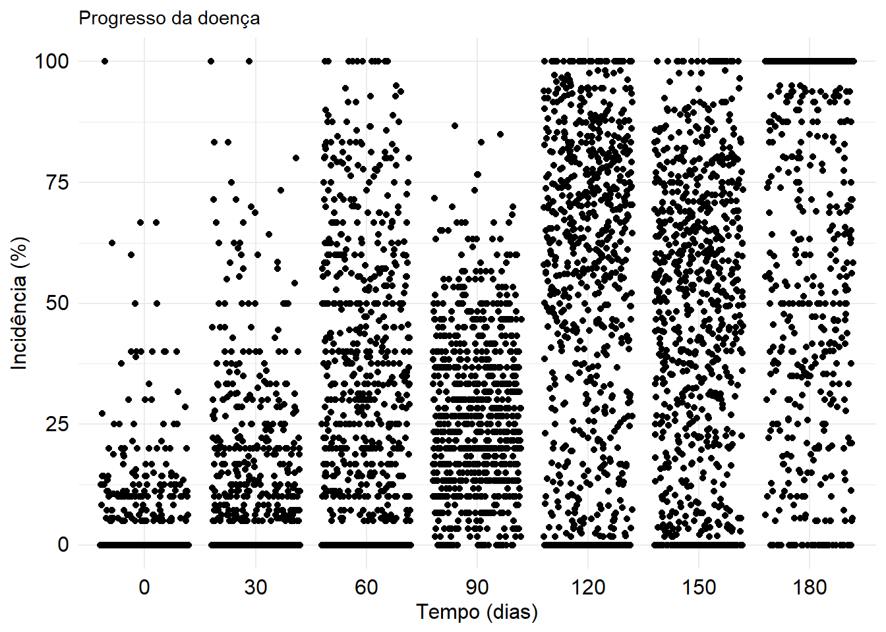
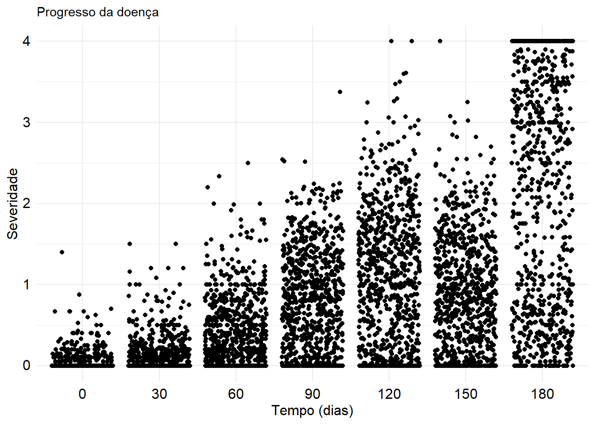
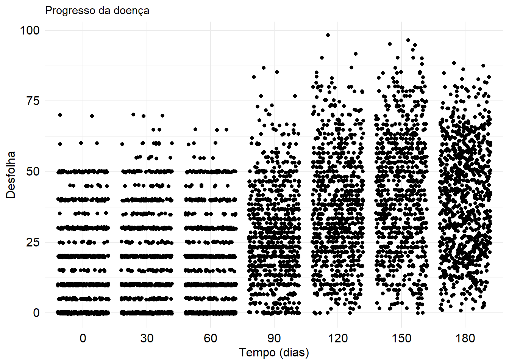

Code
# Carregamento pacotes
library(readxl)
library(dplyr)
library(tidyverse)Amanda Pereira Honório & Richard Pardes-Espinosa
June 26, 2024
Como o Dataframe contendo os dados de incidência, severidade e defolha da ferrugem do cafeeiro está localizado em uma planilha do Excel chamada ferrugem, utilizou-se a função read_excel do pacote readxl para realizar a importação dos dados. O DataFrame foi então atribuído ao objeto denominado dato.
A tabela contém dados sobre a incidência da ferrugem do cafeeiro ao longo do tempo.
# A tibble: 840 × 9
Gen Rep `0` `30` `60` `90` `120` `150` `180`
<dbl> <dbl> <dbl> <dbl> <dbl> <dbl> <dbl> <dbl> <dbl>
1 1 1 0 0 0 0 0 6.67 100
2 1 2 0 0 0 20 3.70 11.6 76.2
3 1 3 0 0 0 21.7 1.85 5.79 70.2
4 1 4 10 10 64.3 20 73.9 32.5 25.9
5 1 5 0 0 0 0 26.7 20.8 55
6 2 1 0 10.6 78.9 20 49.4 68.9 100
7 2 2 0 0 60 23.3 58.6 60.9 100
8 2 3 0 0 85.7 40 48.1 41.5 100
9 2 4 0 0 11.1 33.3 41.1 74.2 100
10 2 5 0 0 14.3 40 19.4 21.2 100
# ℹ 830 more rows# A tibble: 5,880 × 4
Gen Rep time incidence
<dbl> <dbl> <chr> <dbl>
1 1 1 0 0
2 1 1 30 0
3 1 1 60 0
4 1 1 90 0
5 1 1 120 0
6 1 1 150 6.67
7 1 1 180 100
8 1 2 0 0
9 1 2 30 0
10 1 2 60 0
# ℹ 5,870 more rowsA tabela contém dados sobre a severidade da ferrugem do cafeeiro ao longo do tempo.
# A tibble: 840 × 9
Gen Rep `0` `30` `60` `90` `120` `150` `180`
<dbl> <dbl> <dbl> <dbl> <dbl> <dbl> <dbl> <dbl> <dbl>
1 1 1 0 0 0 0 0 0.0667 3.25
2 1 2 0 0 0 0 0.0556 0.177 1.42
3 1 3 0 0 0 0.0992 0.0556 0.0764 1.25
4 1 4 0.2 0.2 1 0.952 2.08 0.558 0.455
5 1 5 0 0 0 0.0167 0.575 0.417 0.7
6 2 1 0 0.106 0.894 0.804 0.795 0.956 4
7 2 2 0 0 0.6 0.660 1.05 0.979 3
8 2 3 0 0 0.857 0.964 0.835 0.680 3.25
9 2 4 0 0 0.111 0.954 0.991 2.01 3.1
10 2 5 0 0 0.143 0.401 0.343 0.461 3.64
# ℹ 830 more rows# A tibble: 5,880 × 4
Gen Rep time severity
<dbl> <dbl> <chr> <dbl>
1 1 1 0 0
2 1 1 30 0
3 1 1 60 0
4 1 1 90 0
5 1 1 120 0
6 1 1 150 0.0667
7 1 1 180 3.25
8 1 2 0 0
9 1 2 30 0
10 1 2 60 0
# ℹ 5,870 more rowsA tabela contém dados sobre a desfolha do cafeeiro ocasionada pela ferrugem do cafeeiro ao longo do tempo.
# A tibble: 840 × 9
Gen Rep `0` `30` `60` `90` `120` `150` `180`
<dbl> <dbl> <dbl> <dbl> <dbl> <dbl> <dbl> <dbl> <dbl>
1 1 1 0 0 0 0 36.7 48.3 44.2
2 1 2 20 20 0 20 26.7 30 25
3 1 3 10 10 0 21.7 21.7 28.3 21.7
4 1 4 35 35 30 20 51.7 63.3 36.7
5 1 5 40 40 0 0 35 45 22.5
6 2 1 0 5 5 20 53.3 58.3 41.7
7 2 2 0 0 0 23.3 46.7 40 40
8 2 3 30 30 30 40 38.3 31.7 45.8
9 2 4 10 10 10 33.3 36.7 63.3 41.7
10 2 5 30 30 30 40 26.7 30 30
# ℹ 830 more rows# A tibble: 5,880 × 4
Gen Rep time defolation
<dbl> <dbl> <chr> <dbl>
1 1 1 0 0
2 1 1 30 0
3 1 1 60 0
4 1 1 90 0
5 1 1 120 36.7
6 1 1 150 48.3
7 1 1 180 44.2
8 1 2 0 20
9 1 2 30 20
10 1 2 60 0
# ℹ 5,870 more rowsPara que possa ser gerado um gráfico para visualização dos dados, a tabela foi transformada para o formato longo, utilizando a função pivot_longer.
Utilizando o pacote ggplot2, os dados de incidência, severidade e da desfolha da doença foram explorados visualmente por meio de gráfico de pontos.
Gráfico de pontos: Primeiramente, visualizou-se a distribuição dos pontos de inicidência ao longo do tempo por meio de um gráfico de pontos básico. Como havia muitos pontos e para evitar sobreposição, foi utilizada a função geom_jitter, que promove a desagregação dos pontos no gráfico. Dentro desta função, foram definidos o tamanho e a quantidade de deslocamento dos pontos.
Para a incidência:
# Carregar bibliotecas
library(ggplot2)
library(ggthemes)
# Crie gráficos e reordene observações em relação ao tempo
df1$time <- factor(df1$time, levels = c(0, 30, 60, 90, 120, 150, 180))
plot1 <- df1 |>
ggplot(aes(time, incidence),
incidence) +
geom_jitter() +
theme_minimal() +
labs(subtitle = "Progresso da doença",
x = "Tempo (dias)",
y = "Incidência (%)") +
theme(axis.text.x = element_text(size = 12,
color = "Black",
hjust = 0.5,
vjust = 1)) +
theme(axis.text.y = element_text(size = 12,
color = "Black",
hjust = 1,
vjust = 0.4),
axis.title = element_text(size = 12, color = "black"))
plot1
Para a severidade:
# Crie gráficos e reordene observações em relação ao tempo
df2$time <- factor(df2$time, levels = c(0, 30, 60, 90, 120, 150, 180))
plot2 <- df2 |>
ggplot(aes(time, severity),
severity) +
geom_jitter() +
theme_minimal() +
labs(subtitle = "Progresso da doença",
x = "Tempo (dias)",
y = "Severidade") +
theme(axis.text.x = element_text(size = 12,
color = "Black",
hjust = 0.5,
vjust = 1)) +
theme(axis.text.y = element_text(size = 12,
color = "Black",
hjust = 1,
vjust = 0.4),
axis.title = element_text(size = 12, color = "black"))
plot2
Para a desfolha:
# Crie gráficos e reordene observações em relação ao tempo
df3$time <- factor(df3$time, levels = c(0, 30, 60, 90, 120, 150, 180))
plot3 <- df3 |>
ggplot(aes(time, defolation),
defolation) +
geom_jitter() +
theme_minimal() +
labs(subtitle = "Progresso da doença",
x = "Tempo (dias)",
y = "Desfolha") +
theme(axis.text.x = element_text(size = 12,
color = "Black",
hjust = 0.5,
vjust = 1)) +
theme(axis.text.y = element_text(size = 12,
color = "Black",
hjust = 1,
vjust = 0.4),
axis.title = element_text(size = 12,
color = "black"))
plot3
Primeiramente, a variável tempo e incidência/severidade/desfolha são transformadas em caracteres numéricos utilizando as funções as.numeric e as.character que convertem os valores da coluna tempo em caracteres. Isto é útil se os dados originais estiverem em outro formato (por exemplo, fatores) que precise ser convertido antes de serem numéricos.
# Converter tempo e incidência em variáveis numéricas
df1$time <- as.numeric(as.character(df1$time))
df1$incidence <- as.numeric(as.character(df1$incidence))
# Converter tempo e severidade em variáveis numéricas
df2$time <- as.numeric(as.character(df2$time))
df2$severity <- as.numeric(as.character(df2$severity))
# Converter tempo e desfolha em variáveis numéricas
df3$time <- as.numeric(as.character(df3$time))
df3$defolation <- as.numeric(as.character(df3$defolation))Inicialmente é carregada a biblioteca Agricolae que permite o processamento dos dados. Ela contém funções específicas para calcular a Área Sob a Curva de Progresso da Doença (AACPD), medida comum em estudos de fitopatologia. Assim, para o cálculo da AACPD foi utilizada a função AUDPC do pacote Agricolae.
Foi definida a função audpcI, audpcS e audpcD com dois argumentos para cada função: time e incidence, time e severity, time e defolation, respectivamente. Dentro delas, é utilizada a função audpc para calcular a Área Sob a Curva do Progresso da Doença (AACPD) usando esses valores. O resultado de audpc é retornado como saída de audpcI, audpc2 e audpc3oferecendo uma maneira simples e reutilizável de calcular a AACPD para dados de epidemia em estudos fitopatológicos.
Para a incidência:
# A tibble: 840 × 3
# Groups: Gen [168]
Gen Rep AUDPC
<dbl> <dbl> <dbl>
1 1 1 1700
2 1 2 2203.
3 1 3 1933.
4 1 4 6559.
5 1 5 2250
6 2 1 8333.
7 2 2 7585.
8 2 3 7959.
9 2 4 6292.
10 2 5 4347.
# ℹ 830 more rowsPara a severidade:
# A tibble: 840 × 3
# Groups: Gen [168]
Gen Rep AUDPC
<dbl> <dbl> <dbl>
1 1 1 50.8
2 1 2 28.4
3 1 3 25.7
4 1 4 154.
5 1 5 40.8
6 2 1 167.
7 2 2 144.
8 2 3 149.
9 2 4 168.
10 2 5 95.1
# ℹ 830 more rowsPara a desfolha:
# A tibble: 840 × 3
# Groups: Gen [168]
Gen Rep AUDPC
<dbl> <dbl> <dbl>
1 1 1 3213.
2 1 2 3575
3 1 3 2925
4 1 4 7075
5 1 5 4538.
6 2 1 4875
7 2 2 3900
8 2 3 6238.
9 2 4 5375
10 2 5 5600
# ℹ 830 more rowsFoi criado um novo dataframe com os dados da AACPD de Incidência, Severidade e Desfolha. A função left_join do pacote dplyr permite combinar duas tabelas. Após obter os cálculos de AACPD para incidência, severidade e desfolha, as tabelas foram unidas usando left_join() com base nas colunas Gen e Rep. Essa união de tipo esquerda preserva todas as linhas de audpc1, adicionando as correspondentes de audpc2 e audpc3 onde Gen e Rep coincidam. O resultado é um novo dataframe AUDPC com as colunas combinadas de audpc1, audpc2 e audpc3 para cada combinação de genótipo (Gen) e repetição (Rep).
# A tibble: 840 × 5
# Groups: Gen [168]
Gen Rep AUDPC.x AUDPC.y AUDPC
<dbl> <dbl> <dbl> <dbl> <dbl>
1 1 1 1700 50.8 3213.
2 1 2 2203. 28.4 3575
3 1 3 1933. 25.7 2925
4 1 4 6559. 154. 7075
5 1 5 2250 40.8 4538.
6 2 1 8333. 167. 4875
7 2 2 7585. 144. 3900
8 2 3 7959. 149. 6238.
9 2 4 6292. 168. 5375
10 2 5 4347. 95.1 5600
# ℹ 830 more rows# A tibble: 840 × 5
# Groups: genotype [168]
genotype repetition incidence severity defoliation
<dbl> <dbl> <dbl> <dbl> <dbl>
1 1 1 1700 50.8 3213.
2 1 2 2203. 28.4 3575
3 1 3 1933. 25.7 2925
4 1 4 6559. 154. 7075
5 1 5 2250 40.8 4538.
6 2 1 8333. 167. 4875
7 2 2 7585. 144. 3900
8 2 3 7959. 149. 6238.
9 2 4 6292. 168. 5375
10 2 5 4347. 95.1 5600
# ℹ 830 more rowsÉ recomendável renomear as colunas das variáveis para facilitar as estimativas do ANOVA e a comparação de médias. Isso é feito utilizando a função rename, que permite mudar os nomes das colunas no DataFrame. Por exemplo, Gen é renomeado para genotype, Rep para repetition, AUDPC.x (resultante da primeira união) para incidence, AUDPC.y (resultante da segunda união) para severity, e AUDPC (resultante da terceira união) para defoliation. Finalmente, o DataFrame é exportado para um arquivo CSV usando a função write.csv(), o que facilita o armazenamento e a posterior utilização dos dados.